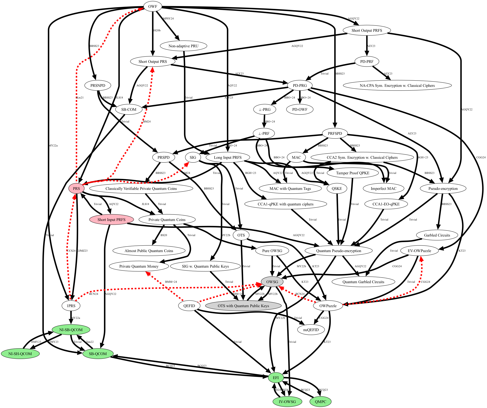

The graph on this website describes known connections between quantum cryptographic primitives. We only show MicroCrypt: primitves that are based on assumptions which are potentially wearker than one-way functions. Black edge between A and B means that there is a (not necessasrily black-box) construction of B from A. A red edge from B to A means that B is black-box separated from A. Hovering with your mouse cursor over an edge will show a tooltip with reference to a work that investigates the relation between the two connected nodes. Clicking an edge will take you to a website with more details on the respective work. Hovering over a node will show a tooltip with the name of the primitive and other details. Nodes which share a color are equivalent.
The zookeeper is Or Sattath. Contributions are welcome! See https://github.com/sattath/microcrypt-zoo for details.
